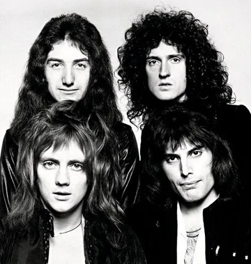
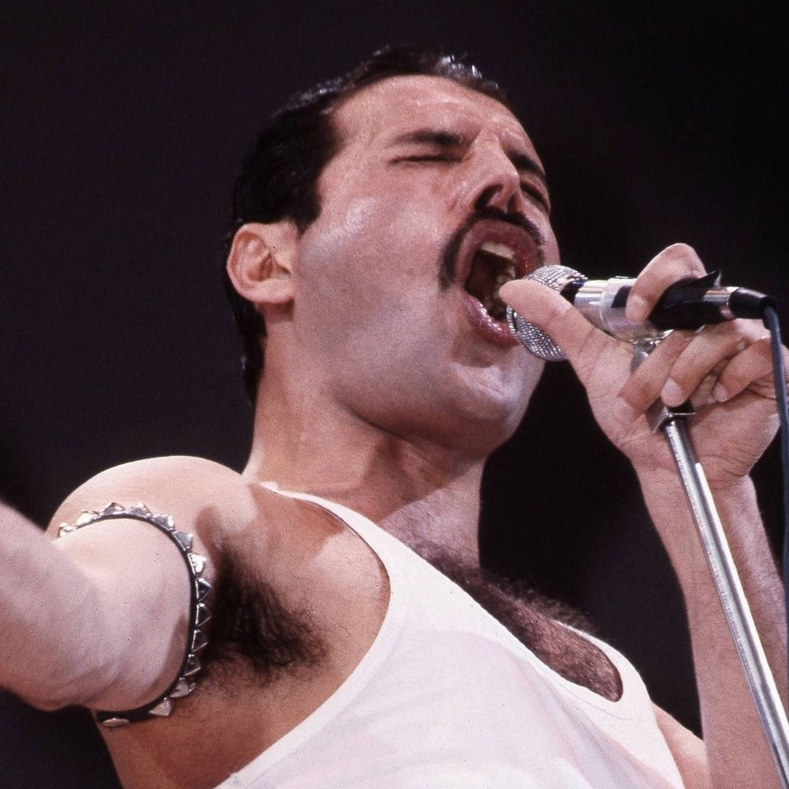

Queen emerged from London in 1970, formed by Freddie Mercury, Brian May, John Deacon,Roger Taylor, and later joined by John Deacon. The band quickly distinguished itself through a unique fusion of heavy metal, progressive rock, and operatic arrangements, all centered around Mercury’s extraordinary vocal range and flamboyant stage presence. Throughout the 1970s, they achieved global stardom with groundbreaking hits like "Bohemian Rhapsody," which defied conventional radio standards and solidified their reputation as masters of studio production and musical innovation.


By the 1980s, Queen had evolved into one of the greatest stadium rock acts in history, marked by their legendary 1985 performance at Live Aid. Their ability to blend genres—ranging from funk and disco in "Another One Bites the Dust" to rockabilly in "Crazy Little Thing Called Love"—ensured their continued relevance. Despite the tragic loss of Freddie Mercury in 1991, the band's legacy has endured through their massive discography, the biographical film Bohemian Rhapsody, and ongoing tours with vocalists like Adam Lambert, maintaining their status as timeless icons of popular culture.